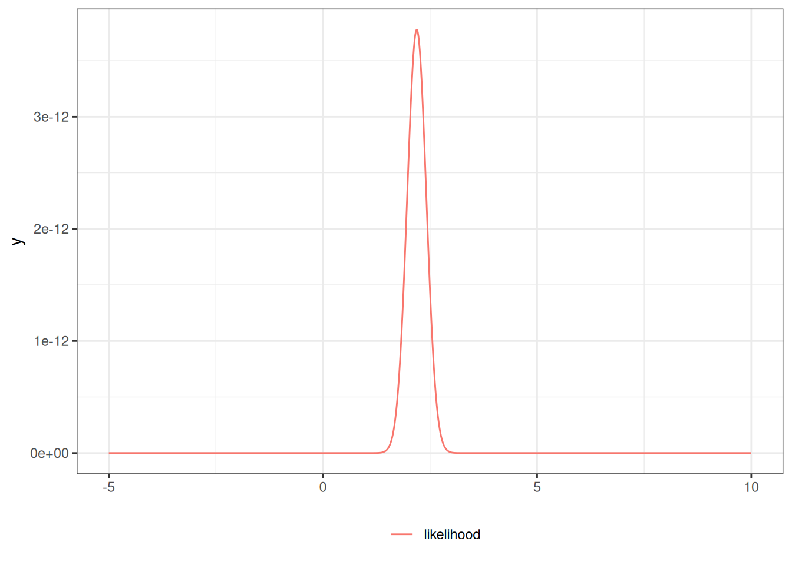
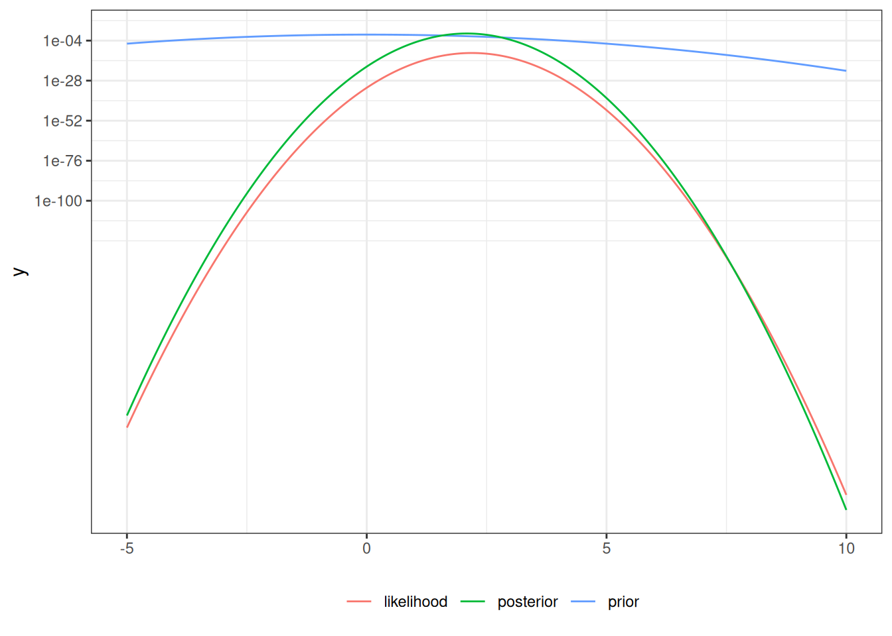

set.seed(1)mu<-2sigma<-1n<-20x<-rnorm(n =n, mean =mu, sd =sigma)xbar<-mean(x)se<-sigma/sqrt(n)CI_freq<-xbar+se*qnorm(c(.025, .975))print(CI_freq)#> [1] 1.75226 2.62879
Show R code
lik0<-function(mu)dnorm(x =x, mean =mu, sd =1)|>prod()lik<-function(mu){(2*pi*sigma^2)^(-n/2)*exp(-1/(2*sigma^2)*(sum(x^2)-2*mu*sum(x)+n*(mu^2)))}library(ggplot2)ngraph<-1001plot1<-ggplot()+geom_function(fun =lik, aes(col ="likelihood"), n =ngraph)+xlim(c(-5, 10))+theme_bw()+labs(col ="")+theme(legend.position ="bottom")print(plot1)

Here’s a Bayesian CI:
Show R code
mu_prior_mean<-0mu_prior_sd<-1mu_post_mean<-n/(n+1)*xbarmu_post_var<-1/(n+1)mu_post_sd<-sqrt(mu_post_var)CI_bayes<-qnorm( p =c(.025, .975), mean =mu_post_mean, sd =mu_post_sd)print(CI_bayes)#> [1] 1.65851 2.51391prior<-function(mu)dnorm(mu, mean =mu_prior_mean, sd =mu_prior_sd)posterior<-function(mu)dnorm(mu, mean =mu_post_mean, sd =mu_post_sd)plot2<-plot1+geom_function(fun =prior, aes(col ="prior"), n =ngraph)+geom_function(fun =posterior, aes(col ="posterior"), n =ngraph)print(plot2+scale_y_log10())

Here’s \(p(M \in (l(x),r(x))|X=x)\):
Show R code
pr_in_CI<-pnorm(CI_freq, mean =mu_post_mean, sd =mu_post_sd)|>diff()print(pr_in_CI)#> [1] 0.930583